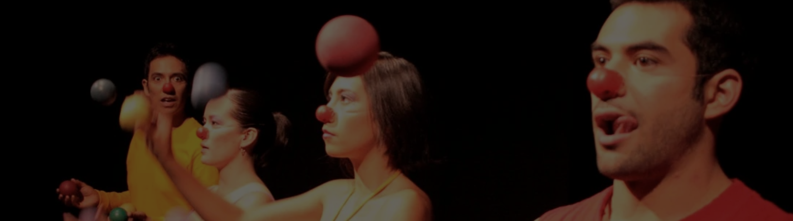
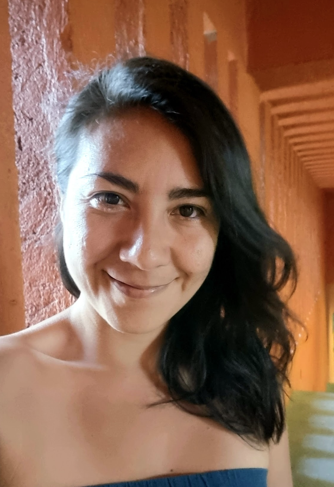
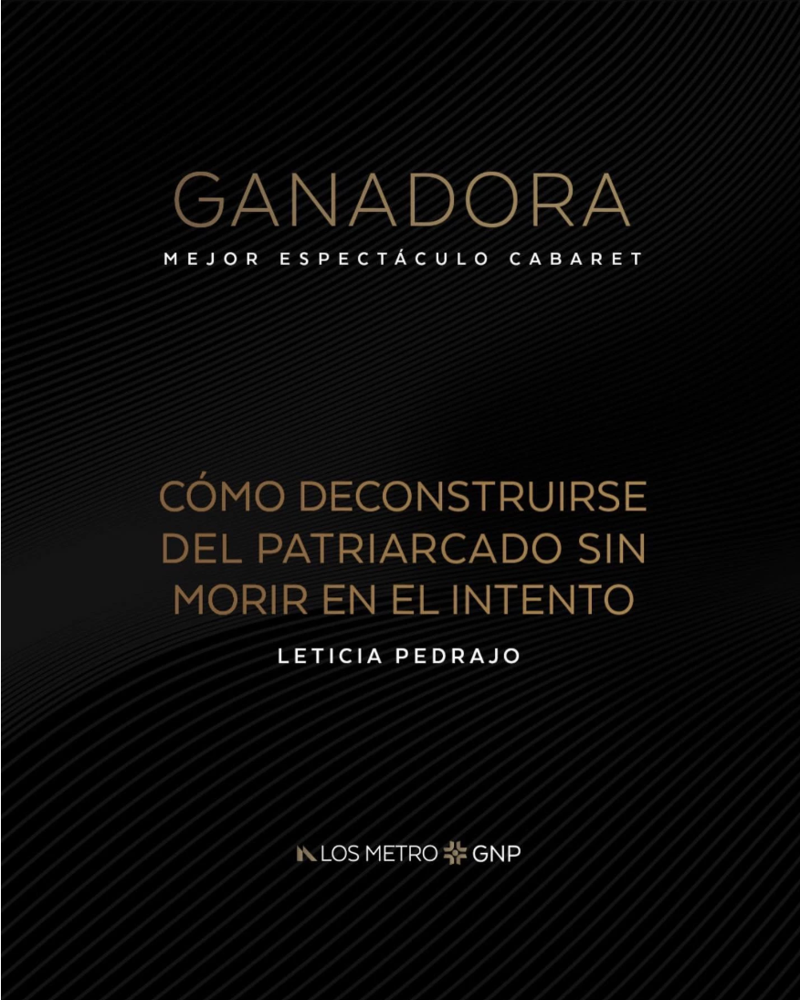
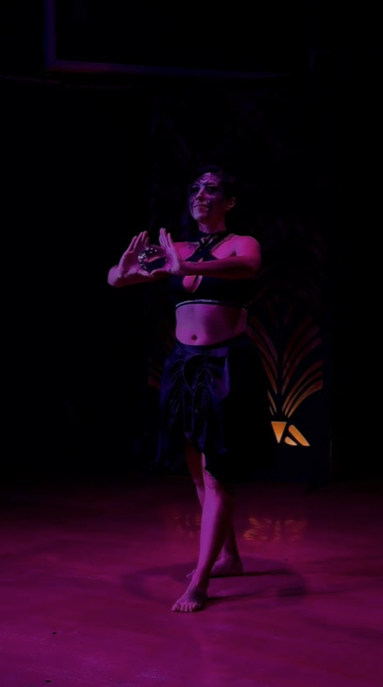
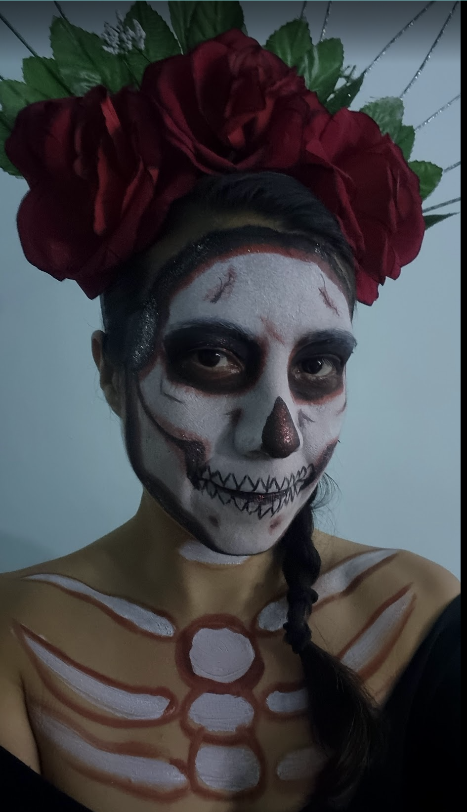

Performances de malabarismo
Performer · 2022–2024

Elena Dimondi es creadora escénica cuya práctica se sitúa en el cruce entre teatro, circo contemporáneo y performance.
Su trabajo integra actuación, manipulación de objetos y acompañamiento creativo en procesos de dirección.

Performer · 2022–2024

Asistente de dirección · 2024–2025

Asistente de dirección · 2025

Performer · Cielo Azul Circo · 2025

Asistente de dirección · 2024
¿Te interesa colaborar en un proyecto escénico, audiovisual o performático?